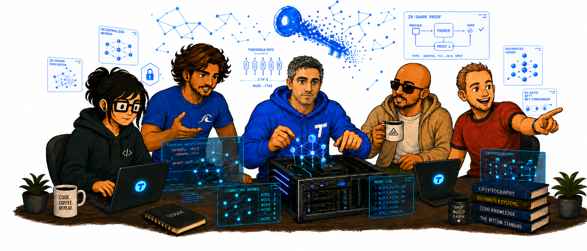

Julio
Engineers the decentralised systems and services that make breach-proof cryptography real in production.
Open anything online and you are taking it on faith: that it is real, that it is theirs, that no one meddled with it along the way. Tide changes the deal. It lets proof travel with the thing itself, so authenticity is something you check, not something you hope for, and the authority behind it answers to no one. A new paradigm, built by people who would rather draw the map than follow it.

The people who turned a wild cryptographic idea into something you can actually build with, and the ones keeping it open for everyone.
Engineers the decentralised systems and services that make breach-proof cryptography real in production.
Builds Tide's developer-facing tooling and lives deep in the Keycloak IAM internals behind TideCloak.
Building Tide from the ground up, turning a frontier cryptographic breakthrough into something product teams can actually ship.
Two decades architecting large-scale telecom and VoIP systems. The technical mind behind Tide's Ineffable Cryptography.
15+ years across marketing, growth and partnerships for some of the world's top brands. Drives Tide's go-to-market and story.
For decades the web has run on a handshake and a hope. Is this really them? Did it come from who it claims? Has anyone touched it since? Tide answers all three with proof instead of faith, and puts that power in everyone's hands and no one's grip.
Our Ineffable Cryptography is born in fragments and never assembled, not on a server, not in memory, not even by us. There is nothing to steal, leak or quietly abuse, because the whole was never in one place to begin with.
TideCloak hands developers this superpower in a few lines of code. Plug it into your apps and APIs and your users stay safe even if you, or your vendor, get breached.
Open code, self-sovereign, yours to run. Read every line and check it for yourself. Believe it because you can see it, not because we told you to.
Authority lives shattered across a network of independent nodes (the ORKs), held by no single party, us included. There is no one to bribe, breach or coerce, and you can check the maths yourself instead of taking anyone's word.
It is all open code. Here is the flagship, and one example of what it makes possible.
Most login systems are a honeypot: one central pile of credentials, and cracking it hands over everyone at once. TideCloak flips that. Your users hold their own authority, so there is no master vault to steal. You wire it in with a few lines of code, and you stay safe even when you get breached.
Take keys out of the equation entirely and you get SSH with no private keys anywhere, not on the server, not in a bastion, not on the laptop. Authority is signed across Tide's network, so there is nothing to leak, rotate or lose. Keyless access to the machines that matter most.
This was never just about security. It is about who holds the keys to everything, and our answer is no one. If you would rather build the future than inherit it, there is a seat here.